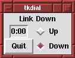
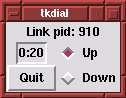
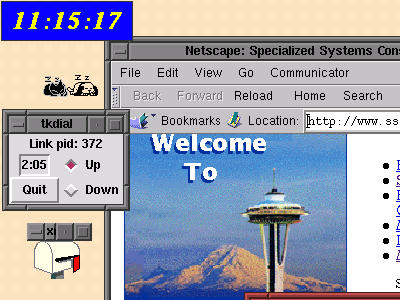

"Linux Gazette...making Linux just a little more fun!"
A Simple Internet Dialer for Linux
Those of us that have used Netscape (or other Web browsers) under Windows,
may have felt some envy at the sight of the Dialer, a little box in one
corner of the screen showing that you are on-line and how much time you
have already spent on-line, so your phone bill doesn't go overboard.
In Linux, on the other hand, setting up a dial-up connection and making
it work is often a rather painful process, a "challenge", if you like:
Not only no handy auto-install packages available from your internet service
provider -- you have to figure out everything for yourself, and know what
questions to ask -- but also establishing the connection every time requires
you to go through a sequence of operations.
Open an xterm or a virtual console, log in as root, and run the ppp
startup script (unless of course you use the diald
package for dial-on-demand, an alterative also. I personally found that
it had too much a mind of its own :-).
Closing the connection similarly requires you to do the same to run
a disconnect script.
One of the first things I did therefore when I decided to learn tcl/tk
was to write a Dialer look-alike. It (tkdial)
is attached to this text; it is the first tcl/tk program I ever
wrote -- just under 150 lines -- and that may show. But tcl/tk
is ideal for this kind of job, "glueing" existing command line facilities
together into a beautiful motif-look, mouseable package. Just have a look
at the pictures!
 
You can put a call to this script somewhere in your X startup, in the case
of Red Hat 5.0, in the file /etc/X11/Anotherlevel/fvwf2rc.init.
Then you will always have it on your desktop (Linux lives on connectivity!).
It gives precise, interactive, manual control of your ppp link.
There are some things with a dial-up connection which appear not generally
known (I'm not talking to you, geeks and gurus :-).
I'll give a quick run-down of my experiences as I understood them (but
note that I am no professional):
-
In order to be able to run tkdial (which
calls pppd) as an ordinary user,
you should have pppd set suid root.
Additionally, you should be able to read the scripts in the
/etc/ppp directory, so they should either be world readable or readable
by a group to which you belong. (A nice exercise in basic system administration.
But if you give world reading rights to your pap-secrets
file, you will deservedly fail your exam!)
-
The standard Red Hat sendmail setup
uses sendmail -bd -q1h, in other
words, activate the sendmail daemon
once an hour. That's not much. In a dial-up environment you want to send
out mail while the line is up, so change the -q1h
to -q2m, for example, for every
two minutes. And follow with the mailq
command if your mail really has left your machine, before closing down
the ppp link. (If you forget, not to worry: The queue will continue to
try for five days, every time ppp comes up.)
-
There is an option to pppd called
lcp-echo-interval, which can be used to keep the line alive. LCP
means Link Control Protocol, and by putting an option lcp-echo-interval
60 into either your /etc/ppp/options
file or on the pppd command
line when starting it up (i.e. inside the tkdial
script file), you can keep your line alive even when not actively
browsing.
This is important because, with the ubiquity of crashy operating systems,
internet service providers have taken to the habit to cut the line when
nothing has arrived over it for a couple minutes. Imagine starting a five
hour download, going shopping, and returning only to find that three minutes
after you closed the door, the machine crashed and the phone line is still
open, burning up your money for nothing! (This could even happen in principle
with Linux, if the power goes down and you don't have an UPS, or your dog
gnaws off the phone wire. Well, the modem has a time-out also). So Windows
dialers send an empty package once every minute or so to the ISP, telling
"don't worry, I'm still alive!" And when the system crashes, the line cuts
promptly.
With the option given above, also Linux will send an empty package
every 60 seconds.
-
If you have a POP3 mail service, the best program (transport agent) undoubtedly
is fetchmail, which transports
the mail to your "system maildrop", typically /var/spool/mail/<userid>.
Also fetchmail can be run as a
daemon. You can use xbiff or xmailbox
to inform you of arrived mail, and read it with
pine, exmh (recommended,
another one of those tcl/tk miracle programs!) or whatever. If you
use Netscape mail, forget about all this, you just have to configure it
on its own terms, which involves learning pretty much the same concepts
anyway.
-
A trick (I don't really know if this is wise or intended, but it
sure is effective!):
If you use very much the same search agent all the time, e.g. Alta
Vista, put it in the file /etc/hosts.
Find out Alta Vista's IP address with ping.
The details are left as an exercise for the reader, as well as the explanation
for the speedup achieved (hint: DNS...)
-
Make sure that your machine name (as given in the network setup procedure)
is the same as that which your ISP gave to your mailbox. So, if you are
john.smith@isp-international.com,
call your machine isp-international.com.
Not very romantic, but you avoid problems with an anti-spam feature in
some sendmail installations, which
bounces mail coming from a "sender" not existing (i.e. not found by the
domain name service) on the internet. (I expect that this feature can be
circumvented by reconfiguring and recompiling sendmail.cf.
I guess the sendmail folks just
bet that such a feat is way beyond your average spammer, and I bet they're
right...)
Alternatively, make yourself exist; but that requires the co-operation
of your ISP. E.g. EUnet would give you a mailbox name of donald.duck@john-smith.pp.fi,
which provides you with a slightly more personalized name for your own
machine...
And make sure to keep the localhost
name also valid. Some programs depend on it.
Acknowledgement: I am indebted to Jaakko Hyvätti
of EUnet Finland, who provided me with working ppp scripts and plenty good
advice.
Enjoy!
(a piece of my desktop:)
-

Copyright © 1998, Martin Vermeer
Published in Issue 25 of Linux Gazette, February 1998
![[ TABLE OF CONTENTS ]](../gx/indexnew.gif)
![[ FRONT PAGE ]](../gx/homenew.gif)